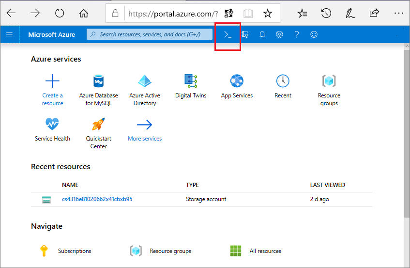
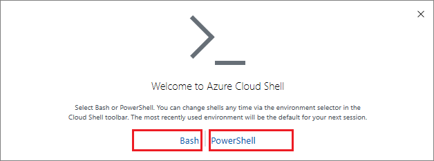
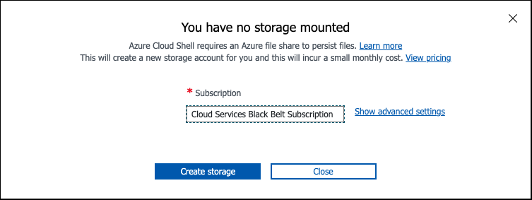

Azure portal and CLI setup
Access Azure Portal and CLI#
Access the Azure Portal through https://portal.azure.com
Azure Credentials#
Azure credentials will be provided to you by the organizing staff on the day of the event.
Access CloudShell and Attach Persistent Storage#
Azure Cloud Shell is an interactive, authenticated, browser-accessible shell for managing Azure resources.
To start Cloud Shell, launch it from the top navigation of the Azure Portal.

Select the option to use Bash.

When selecting a Cloud Shell region you must select a backing storage account co-located in the same region.
When the storage setup prompt appears, `Create storage'.

When your shell is ready and you are at the bash prompt, run the following commands: